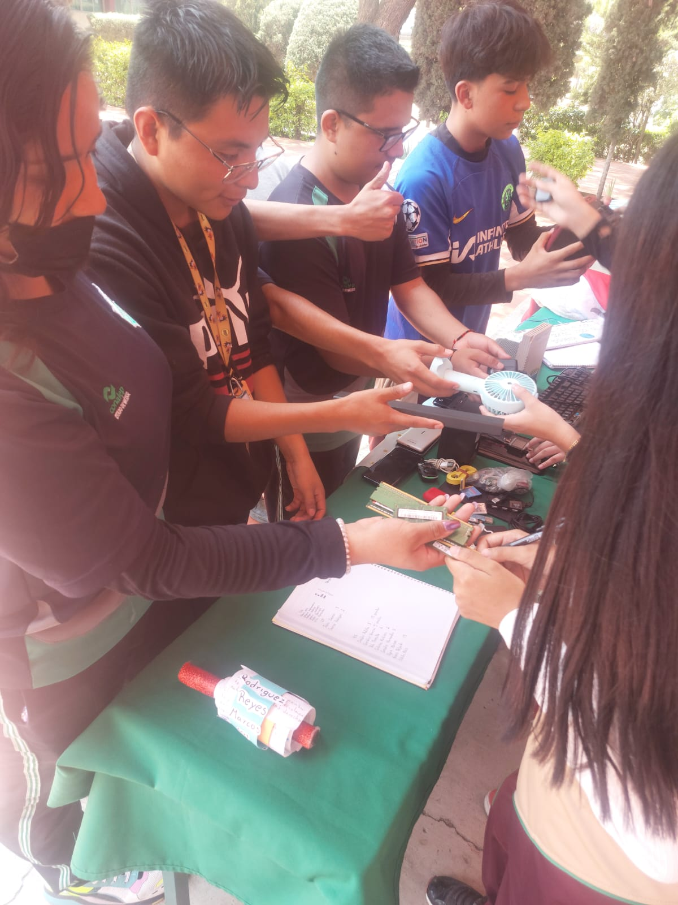

En Conalep Ixtapaluca 236 se invita tanto a los padres de familia, docentes y estudiantes a donar algún aparato electrónico que ya no funcione o ya no utilice, para que podamos darles un nuevo uso de forma creativa.
Los alumnos de conalep recolectan la basuara electrónica

Los alumnos de conalep recolectan la basura electrónicaExposiciones a los alumnos del conalep del ReciclatónMurales del Reciclatón
CATALOGO
Espejo con marco de teclas: Un obejeto decorativo que transforma un elemento cotidiano en una obra de arte con historia y personalidad.Reloj de teclas: Una pieza decorativa unica que fusiona el diseño vintage, con la reutilización de componentes electronicos.Bolsa de teclas: Un accesorio innovador que mezcla estilo y sostenibilidad, demostrando que la moda puede ser amigable.Tapete de teclas: Ideal para darle un toque origina a cualquier espacio, reutilizando teclas de diferentes colores y tamaños.
INDICACIONES
Resuelve los dos juegos interactivos que aparecen en el menú al darle clic a la siguiente página, para reforzar la información de forma divertida..